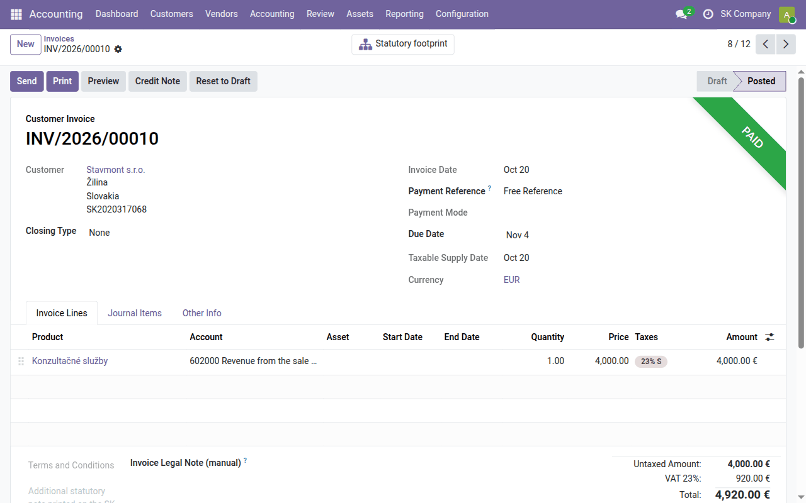
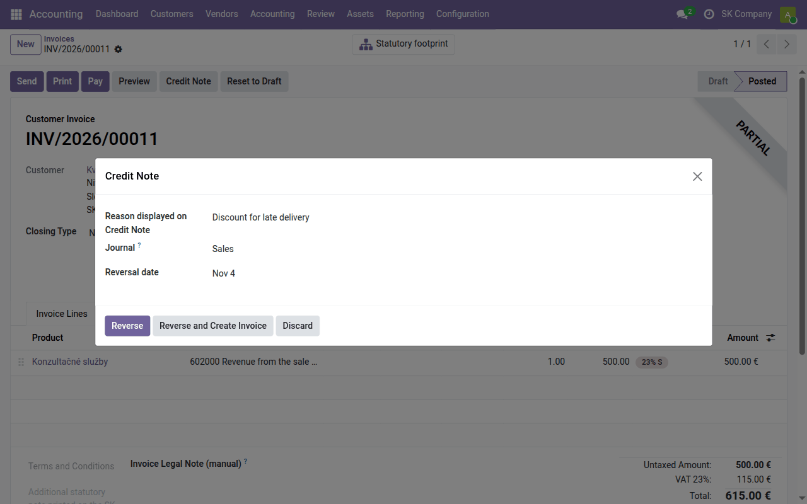
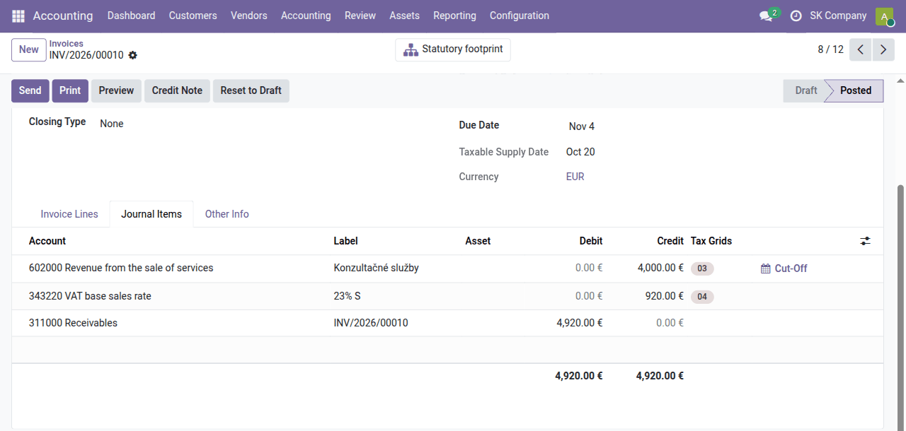

Task guide
Daily bookkeeping
Issued and received invoices, credit notes, advance invoices, payments and internal documents — how each is made in Odoo, how it is posted, and what the Slovak localization adds to it.
What this guide is for
The documents of every day, one by one: what to click, which fields matter for Slovak bookkeeping and VAT, what happens when you confirm, and which accounts the document is posted to. For the words themselves — journal entry, journal item, journal — see Odoo for a Slovak accountant.
The postings are shown for 1,000 € net at 23 % VAT, on the accounts Odoo uses right after the Slovak localization is installed. Where each account comes from, and how to set it up so that every document is posted correctly without anyone touching it, is in Setting up account assignment.
Issued invoice
Accounting → Customers → Invoices → New:
- Customer. A company customer needs its IČO, DIČ and IČ DPH on the
contact — they print on the invoice. A partner the commercial register
shows as dissolved is flagged
(
l10n_sk_trade_registry). - Invoice Date (dátum vyhotovenia), Taxable Supply Date (dátum dodania / DZP) and Payment Terms or a Due Date. The VAT return and KV DPH take the period from the taxable supply date, not from the accounting date.
- Invoice lines: product or description, quantity, price, Taxes. The account comes from the product, and the customer's fiscal position (domestic, EU, export) changes taxes and accounts where needed — what fiscal positions are.
- Confirm. The invoice gets its number, and the Variable Symbol is filled from it (tab Other Info, with the constant and specific symbols).

Send or Print gives the Slovak invoice: IČO, DIČ and IČ DPH of both
sides, the payment symbols, a payment QR code, and the statutory phrase for an
exempt supply or a reverse charge. A phrase the localization does not print by
itself — a contract reference, a special regime — goes into Invoice Legal
Note (manual) on the Invoice Lines tab. Details:
l10n_sk_invoice.
Posting (domestic, 23 %):
| Account | Debit | Credit | From |
|---|---|---|---|
| 311000 Receivables | 1,230 | the customer's Account Receivable | |
| 604000 Sales of goods | 1,000 | the Income Account of the product, its category or the company | |
| 343220 VAT base sales rate | 230 | the 23% tax |
The income line carries tax grid 03 (base), the VAT line grid 04. Out of the box every sale goes to 604000 — services too. Revenue from services (602) and own products (601) is set up on the product category: Setting up account assignment.
Credit note
On a confirmed invoice, Credit Note asks for the Reason displayed on Credit Note and the Reversal Date:
- Reverse creates and posts a credit note for the whole invoice and reconciles the two — the invoice is then settled.
- Reverse and Create Invoice does the same and opens a new draft invoice, for a correction that replaces the original.

For a partial correction (a discount, returned goods), create the credit note with Reverse, reset it to draft, change its lines, and confirm it again.
A cash discount (skonto) for early payment is always settled by a credit note in Slovakia: changing the VAT already declared needs a document. Do not use the early payment discount of Odoo's payment terms. The exception is a discount from a foreign supplier, who sends no credit note: the difference is posted to 648000 — see Setting up account assignment.
In VAT terms the credit note is the opravná faktúra: it carries the reason, refers to the original invoice, and appears in KV DPH section C.
Posting. The Slovak localization turns on Storno Accounting, so a credit note is posted on the same sides as the invoice, with negative amounts (červené storno):
| Account | Debit | Credit |
|---|---|---|
| 311000 Receivables | −1,230 | |
| 604000 Sales of goods | −1,000 | |
| 343220 VAT base sales rate | −230 |
The account turnovers then show the real revenue, not revenue inflated by credit notes on the opposite side. The credit note's base and VAT go to the correction rows 24 and 25 of the VAT return.
Received bill
Accounting → Vendors → Bills → New:
- Vendor, and the Bill Reference — the supplier's invoice number, which KV DPH reports. The Variable Symbol is taken from its digits; overwrite it if the supplier asks for another.
- Bill Date, Accounting Date and Taxable Supply Date. The right to deduct VAT follows the taxable supply date and the day you received the invoice.
- Lines and taxes as on an issued invoice; an EU supplier gets self-assessed taxes through its fiscal position. Domestic reverse charge (§ 69(12)) is decided by the tax on the product, not by the fiscal position.
- Confirm.
What the localization adds on a bill:
- Supplier Reliability and Bank Account Check — when the bill is
posted, the Financial Administration's registers are asked whether the
supplier is on the list of payers with grounds for cancelling the
registration and whether the Recipient Bank account is published. The
answer stays on the bill; a risk shows a warning and never blocks you.
See
l10n_cssk_payment_reliability. - A warning when a domestic reverse charge is aimed at a § 7 or § 7a
registrant, who is not a platiteľ —
l10n_sk_vat_registration. - Simplified invoice (KV DPH B.3) — tick it for a receipt or another simplified invoice, which KV DPH reports in section B.3.
- Split fuel — on a draft fuel bill, splits the cost for the 80 % flat
rate on fuel in income tax —
l10n_sk_vehicle_expense.
Posting (domestic, 23 %):
| Account | Debit | Credit | From |
|---|---|---|---|
| 504000 Goods sold | 1,000 | the Expense Account of the product, its category or the company | |
| 343120 VAT base purchase rate | 230 | the 23% tax | |
| 321000 Suppliers | 1,230 | the vendor's Account Payable |
Out of the box every purchase goes to 504000 — services, energy and material too. A line without a product gets the account used most often with this vendor, and only then 504000. How to set it up: Setting up account assignment.
For a service from an EU supplier, the Eu intra fiscal position swaps the tax for a reverse-charge one, and the VAT is posted to both sides of the same account:
| Account | Debit | Credit |
|---|---|---|
| 518000 Other services | 1,000 | |
| 343120 VAT base purchase rate | 230 | |
| 343120 VAT base purchase rate | 230 | |
| 321000 Suppliers | 1,000 |
Whether it is a service or an acquisition of goods — and so which rows of the return — is decided by the product's tax (23% S for services, 23% for goods): Setting up account assignment.
For a vehicle with 50 % deduction (tax 23% VEHICLE (50% deduction)) half of the VAT goes to 343120 and half to expenses on 548000.
Advance invoices
A Slovak advance is three documents, and only the last two are booked:
- The advance invoice (zálohová faktúra) — a request for payment. On a confirmed sales order, Create Advance Invoice: the full amount, a percentage or a fixed amount. It is numbered ADV00001…, prints with the payment details and QR code, and is not posted.
- The tax document for the payment received (faktúra k prijatej platbe). When the money arrives — Register Payment on the advance, or matched from the bank — the advance shows Create Invoice; the tax document is dated by the payment and goes to the received-advances account (324). VAT is due from the day of payment.
- The final invoice (vyúčtovacia faktúra). Invoice the order as usual: every paid advance is deducted on its own negative line, with the VAT already declared on it, so the VAT is paid once.
Received advances work the same way from a purchase order, and a bill is
settled with Deduct Advance Invoices. Details, including advances without
an order and long-term advances:
sale_order_advance_invoice and
purchase_order_advance_invoice.
Posting of a received advance of 1,230 € (1,000 € + 23 % VAT):
| Document | Account | Debit | Credit |
|---|---|---|---|
| Payment | 221 Bank (for a manually registered payment, 221002 Outstanding Receipts) | 1,230 | |
| 324001 advance clearing (tax document) | 1,230 | ||
| Tax document for the payment | 324001 advance clearing | 1,230 | |
| 324000 Advances received | 1,000 | ||
| 343220 VAT base sales rate | 230 | ||
| Final invoice | 604000 Sales of goods | 1,000 | |
| 324000 Advances received | −1,000 | ||
| 343220 VAT base sales rate | 230 | ||
| 343220 VAT base sales rate | 230 | ||
| 311000 Receivables | 0 |
On 324001 the payment meets its tax document and the two are reconciled. 324000 holds the advance net of VAT until the final invoice settles it; the VAT of the advance is reversed on the final invoice and charged on the whole supply, so the difference is nil. With a partial advance, the balance due stays on 311000. A long-term advance goes to 475000 instead of 324000. Advances paid to suppliers are posted the mirror way through 314001 and 314000.
Payments
Pay on a confirmed invoice or bill records a payment: Journal (bank or cash), Amount, Payment Date, Memo, then Create Payment. The invoice is marked paid and reconciled with it. A payment arriving through the bank is matched from the bank statement instead.
Posting. A payment registered by hand is not yet a movement on the bank account, so it goes through an interim sub-account of the bank accounts:
| Document | Account | Debit | Credit |
|---|---|---|---|
| Customer payment | 221002 Outstanding Receipts | 1,230 | |
| 311000 Receivables | 1,230 | ||
| Vendor payment | 321000 Suppliers | 1,230 | |
| 221003 Outstanding Payments | 1,230 |
When the bank statement arrives, its line is matched with the payment: 221001 Bank against 221002 or 221003, which clears them. If you do not register the payment and match the statement line straight to the invoice, it is 221001 against 311000 or 321000 directly. The balance of 221002 and 221003 is therefore the payments not yet on a statement.
Internal document
An entry with no external document behind it — an accrual, a transfer, a correction — is an interný doklad:
- Accounting → Accounting → Transactions → Journal Entries → New, journal Miscellaneous Operations (in Slovak Interné účtovné doklady).
- A Reference describing the case, the Accounting Date, and the lines: account, Label, debit or credit.
- Post, then print it from the gear menu: ⚙ → Print → Interní / interný doklad. It carries the particulars § 10 of the Accounting Act asks of an accounting document and a line for the signature.
Here the accounts are typed by hand — the internal document is the only one of these where you choose the account.
For recurring patterns — money in transit through 261, transferring the
approved result — Accounting → Accounting → Create Entry from Template
turns one amount into a balanced draft:
l10n_sk_account_move_template.
Check before you confirm
The Journal Items tab of an invoice shows, already in draft, exactly the lines that will be posted — accounts, debit and credit sides, and tax grids. Until the account assignment is set up, it is the quickest check that a service is not going to 604000 and an energy bill to 504000.
